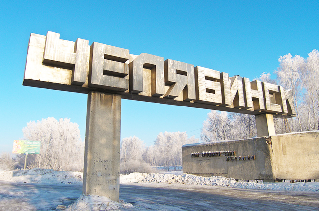
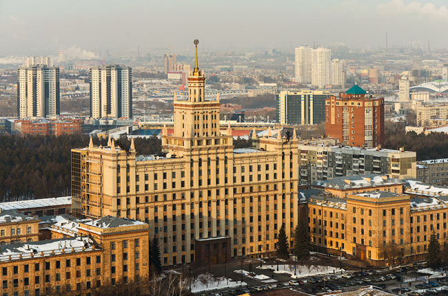

Общие сведения и описание Челябинска
Челябинск — один из крупнейших городов России, административный центр Челябинской области и единственный в России (по состоянию на март 2015 года) городской округ с внутригородским делением. Челябинск расположен в центре материка Евразия, на восточном склоне Уральских гор, на реке Миасс (бассейн Оби), на 200 км южнее Екатеринбурга, в 1920 км к востоку от Москвы. Геологическое расположение Челябинска: западная часть на Урале (граниты), восточная часть в Западной Сибири (осадочные горные породы).
Челябинск является деловым, научным, культурным и спортивным центром Южного Урала. Крупный транспортный узел (железные и шоссейные дороги), стоит на Транссибирской магистрали. Международный аэропорт. Челябинск — крупный промышленный центр с предприятиями металлургии, машиностроения, металлообработки, приборостроения, трубной, химической, лёгкой и пищевой промышленности. По индустриальной мощи Челябинск находится в первой десятке городов России. Около 40 % продукции города — металл. Челябинск является одним из крупнейших в России производителей высококачественных сплавов, жаропрочных и нержавеющих сталей, сортового и листового проката. Челябинск производит 43 % российских ферросплавов, более 60 % российского производства цинка, пятую часть труб страны (почти все — крупного диаметра), высококачественные железнодорожные рельсы, тяжёлые гусеничные тракторы, гусеничные краны, строительно-дорожные машины, фронтальные погрузчики, трубоукладчики, карьерные самосвалы, прицепы-тяжеловозы, уникальные металлоконструкции, приборы.